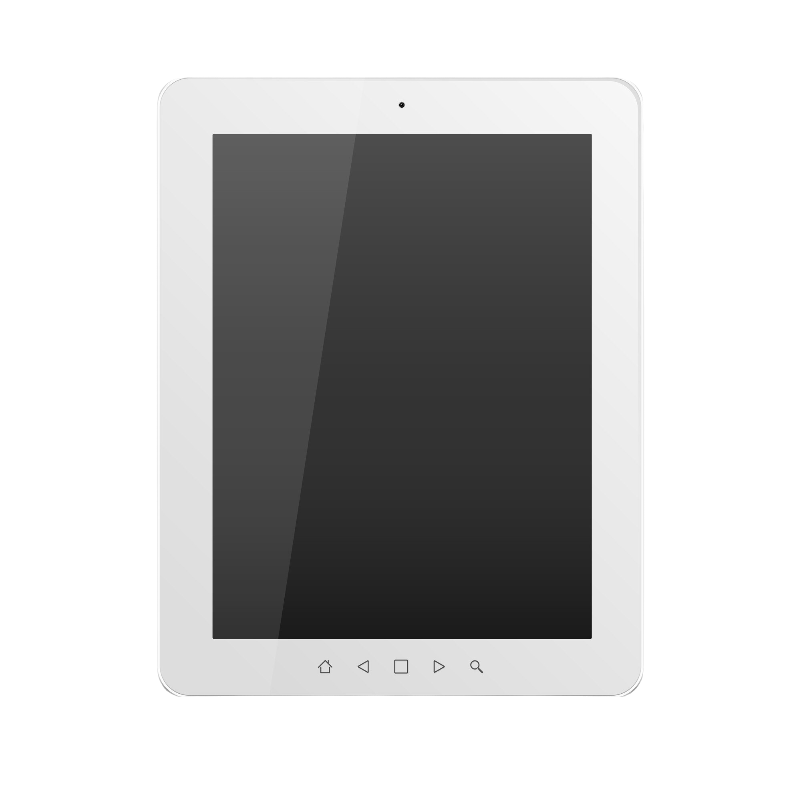
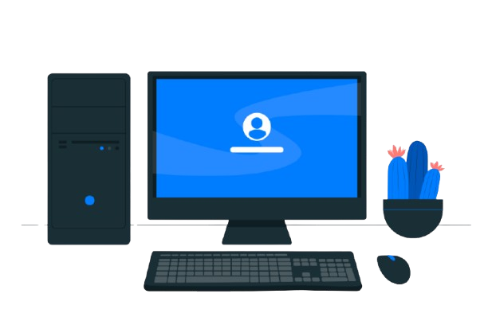

Jenis-jenisTeknologi Digital
 Smartphone
Smartphone
Laptop
Televisi

Tablet

Komputer
 AI
AI
Perkenalkan nama saya Moch.Taufiqur Rohman Siswa SMKN 1 SUMBERASIH saya mengambil jurusan rekayasa perangkat lunak. Dengan latar belakang sedikit tertarik dengan pengembangan web, khususnya HTML ,CSS dan JAVASCRIPT, saya berminat untuk terus belajar dan mengembangkan keterampilan saya di dunia teknologi.Saya juga pernah mengerjakan projek kreatif seperti membuat Website Tentang Batik dan landing Page sederhana.
Teknologi digital adalah teknologi yang menggunakan sistem komputer dan internet untuk mengolah, menyimpan, dan mengirimkan informasi dalam bentuk digital. Teknologi digital memungkinkan kita untuk mengakses, berbagi, dan mengolah informasi dengan cepat dan efisien.
Sejarah Teknologi Digital
Teknologi digital mulai berkembang pada tahun 1940-an dengan penemuan komputer elektronik pertama. Pada tahun 1960-an, teknologi digital mulai digunakan dalam bidang komunikasi dengan penemuan modem dan internet. Pada tahun 1990-an, teknologi digital mulai digunakan dalam bidang komersial dengan penemuan e-commerce dan media sosial.
Smartphone
AI